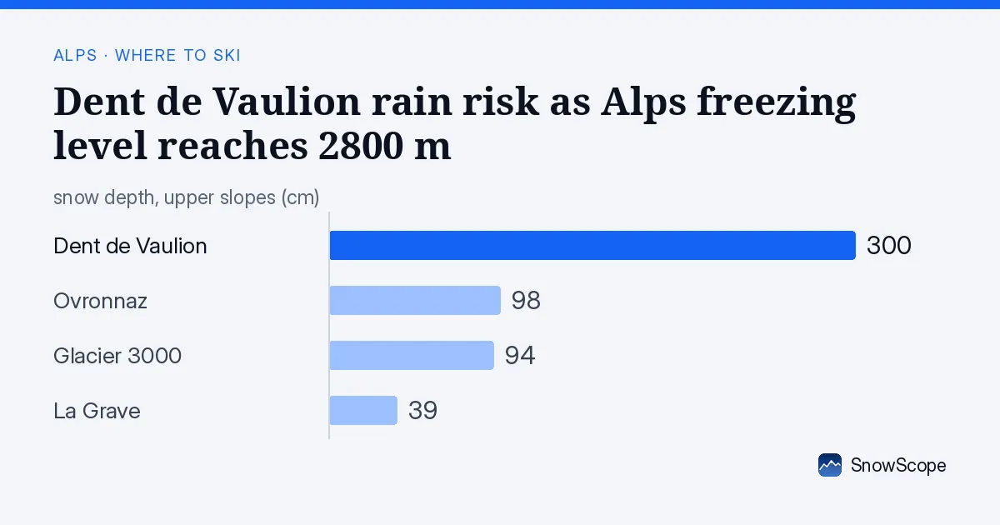

Dent de Vaulion rain risk as Alps freezing level reaches 2800 m
This weekend, the Alps split into two snow worlds: high peaks will keep fresh snow, but lower resorts face rain on Thursday. La Grave, the region's leader at 3543 m, will stay in the dry snow while Dent de Vaulion's 1465 m summit will see rain as the freezing level climbs to 2800 m.
See the live snow forecast for Dent de Vaulion in the SnowScope appSnow depth, powder alerts and the 3D map, free.
La Grave leads with deep snow on the way
Satellite imagery confirms snow is already on the high peaks. La Grave has 48 cm at the summit today, measured at the top on 11 November. Our snow model forecasts 81 cm of new snow over the next seven days at the top—a solid injection for early season.
The heaviest fall arrives Thursday, with 52 cm expected. On Friday, 5 cm more is due, and Saturday brings 1 cm. Crucially, the freezing level on Friday will only reach 3210 m at its peak, below La Grave's 3543 m top. Even on Saturday, the warmest day, freezing levels stay at 2790 m, keeping snow falling above that height. This means the summit stays white through the weekend.
| Resort | Snow depth | New snow, 72 h | Coming, next days | Top |
|---|---|---|---|---|
| Dent de Vaulion | 300 cm | 0 cm | 0 cm | 1,465 m |
| Glacier 3000 | 94 cm | 26 cm | 33 cm | 2,931 m |
| Ovronnaz | 98 cm | 13 cm | 30 cm | 2,456 m |
| La Grave | 39 cm | 23 cm | 58 cm | 3,543 m |

Dent de Vaulion faces Thursday rain; a warning for lower terrain
Dent de Vaulion currently holds 300 cm of snow on its upper slopes—a decent base for early November. Unfortunately, Thursday's warm air mass will bring trouble. The freezing level is forecast to reach as high as 2800 m on Thursday, well above the resort's 1465 m summit. This means rain will fall at every elevation of the ski area.
Adding insult, no new snow is forecast for Dent de Vaulion through Saturday; there is no fresh powder to compensate for the rain damage. Satellite imagery from 5 November showed snow present then. This week's rain-on-snow event will severely test the snowpack. If you are considering Dent de Vaulion, wait until next week.
Glacier 3000 and Ovronnaz stay mostly above the wet line
Glacier 3000 and Ovronnaz will fare better than Dent de Vaulion on Thursday, though both will see some rain at lower elevations as warm air moves in. Glacier 3000 sits at 2931 m at the top, with 14 cm of snow today. Ovronnaz tops out at 2456 m with 8 cm today.
Both resorts are forecast significant new snow on Thursday: Glacier 3000 will collect 28 cm, and Ovronnaz 24 cm. These deposits will strengthen the snowpack for skiing. Friday and Saturday will be even better as conditions stabilize and the freezing level drops, allowing snow to extend to lower elevations. Each resort is forecast 5-6 cm on Friday, setting up excellent skiing for the weekend.
The regional big picture
The Alps as a region are transitioning. Snow-covered area shrank from 45,820 square km on 9 November to 38,440 square km today as warm air swept in. Our model expects recovery to 46,730 square km by Saturday evening as cooler air returns and more snow falls.
The forecast across the range is clear: Thursday is the main snow day for the high Alps, Friday is lighter, and Saturday sees minimal new accumulation. The best window for skiing fresh snow is Friday, when Thursday's deposits have consolidated slightly but are still fluffy.
Safety and practical advice for your weekend
Before going off-piste, read the official avalanche bulletin for the area you plan to explore, especially after a rain-on-snow event like Thursday's. Early-season snow is thin: stick to groomed pistes where visibility and snow stability are managed.
If Dent de Vaulion calls to you, postpone the visit; rain Thursday and no fresh powder make it a poor choice. Check your chosen resort's website for lift openings, as not all lifts run in early November. La Grave, Glacier 3000, and Ovronnaz all offer above-freezing-level runs with incoming powder. Friday is your best bet: Thursday's snow will have bonded, but it will still reward skiers looking for fresh turns.
Tips for skiers
- Target La Grave (48 cm today, 81 cm forecast) where the freezing level stays below the peak Friday. Skip Dent de Vaulion; Thursday's rain and zero new snow make it a poor choice.
- Friday is the golden day: Thursday's big snow (52 cm at La Grave, 28 cm at Glacier 3000) will consolidate slightly but remain skiable.
- Stick to groomed pistes; early-season snow is thin and rocks lurk below in many areas.
- Read the official avalanche bulletin before off-piste descents; Thursday's rain-on-snow may create weak layers.
- Check resort websites for lift openings; not all typically run in November.
About these numbers
Resort snow depths are the deepest snow on the resort's upper slopes from the SnowScope snow model (about 1 km, run of 11 November); they are estimates for an area, not a measurement at one point. Station values are measurements on the date shown. Forecasts can change. Always read the official avalanche bulletin before going off-piste.
Official avalanche bulletins: EAWS (Alps)
Cite this report
For research, teaching or the press: the numbers and charts are free to reuse under CC BY 4.0 with this citation.
SnowScope (2026), Dent de Vaulion rain risk as Alps freezing level reaches 2800 m, https://snowscope.app/blog/en/2026/11/alps-where-to-ski-this-weekend-11-november-2026.html, accessed 2026-11-11
SnowScope (Atlas Labs). (2026, November 11). Dent de Vaulion rain risk as Alps freezing level reaches 2800 m. SnowScope snow reports. https://snowscope.app/blog/en/2026/11/alps-where-to-ski-this-weekend-11-november-2026.html
BibTeX
@misc{snowscope2026alpswheretoskithisweeken,
author = {{SnowScope (Atlas Labs)}},
title = {Dent de Vaulion rain risk as Alps freezing level reaches 2800 m},
year = {2026},
month = nov,
howpublished = {\url{https://snowscope.app/blog/en/2026/11/alps-where-to-ski-this-weekend-11-november-2026.html}},
note = {Published 2026-11-11 18:44 UTC; accessed 2026-11-11}
}· CC BY 4.0 · Methods, data and tools →
Dent de Vaulion: snow and temperature by height, this winter vs last (tools) →
Follow Dent de Vaulion
Free: a message when fresh snow is coming, and the forecast every morning.
More snow reports

Snow model forecasts 112 cm in Switzerland by November 24, with 29 cm on November 17. Fresh water accumulates across the high Alps over the coming week.

Glacier 3000 leads Switzerland with 124 cm after 128 cm of snow in 72 hours. Snow cover jumped to 64% across the country on 20 November.

Chantarella, Marguns, Piz Nair, White Turf: the words you hear in St. Moritz, explained, and what 46 past winters of our snow history say about each height of Corviglia.